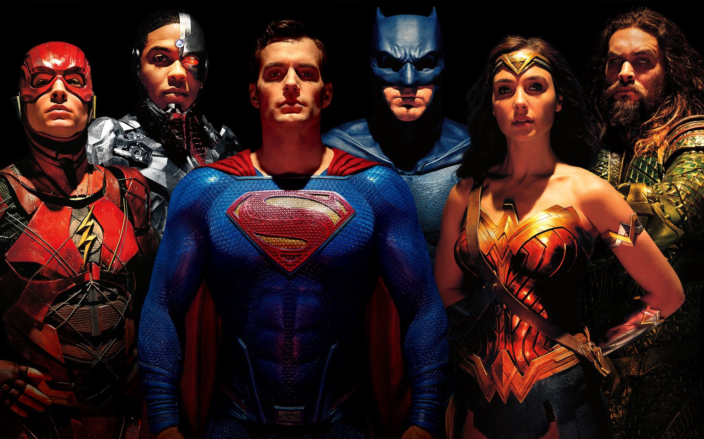
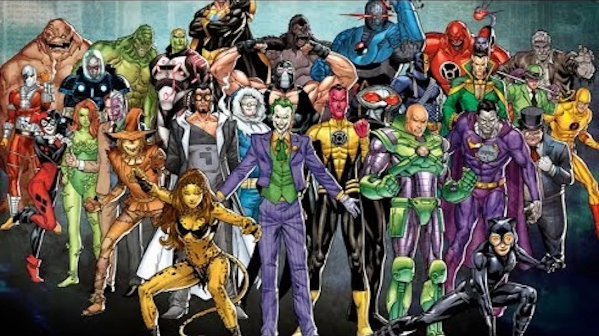

Iconic Superheroes
A hall of fame for the greatest heroes of all time! Batman, Superman, Wonder Woman, Spider-Man—each hero gets a bite-sized profile with their powers, weaknesses, and legendary feats.
Superpowers & Abilities
Superheroes have a wide range of powers and abilities, from super strength and speed to the ability to fly or turn invisible. Some superheroes have powers that are unique to them, such as the ability to control the elements or manipulate time and space. Superheroes use their powers to fight crime and protect the innocent, and they are often seen as symbols of hope and justice.
The Dark Side: Supervillains
Every superhero has a nemesis, a villain who is their polar opposite. Learn about the most famous supervillains, such as the Joker, Lex Luthor, and Doctor Octopus. Discover their 